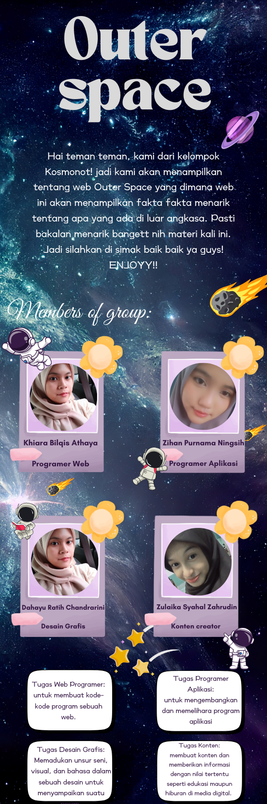

- HOME
- PROSES DESIGN
- PRODUK
Hello Welcome Guys
Do you think I have forgotten? ABOUT YOU
There was something 'bout you that now I can't remember
It's the same damn thing that made my heart surrender
And I miss you on a train, I miss you in the morning
I never know what to think about. I think about you
About you can also be used as an idiom to ask someone to tell us something in response to what we have just said. <
About You is also the title of a song from The 1975 which has the theme of love, longing and hope. This song tells the story of someone who has not been able to move on from his ex-girlfriend.
